Pure SVG + CSS (no JS, no external assets, ~13 KB). Nucleus beats a slow
lub-dub and emits hairline pulse rings; three electrons ride tilted elliptical
orbits with real depth — they pass behind the nucleus and return in front,
growing and brightening as they near the viewer. The whole orbital plane precesses
slowly; the middle (warm) electron runs counter-rotation. Palette is keyed to the site
accent gradient #4F7CFF → #8B95FF with a single warm accent.

prefers-reduced-motion: reduce the mark renders as a clean static atom (electrons parked at 35°/150°/250°, pulse rings hidden).<img> it adapts to OS prefers-color-scheme; inlined into the page it follows the VitePress .dark toggle exactly (the stylesheet targets both). The art is deliberately legible on either background, so a mismatch is never jarring.--B, and per-theme intensities (--halo, --ring, --arc, --tick, --field).